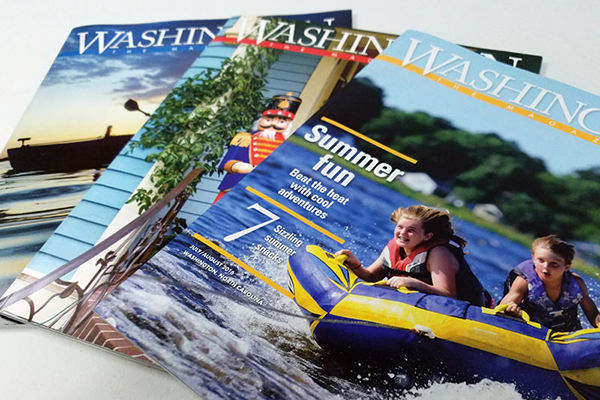
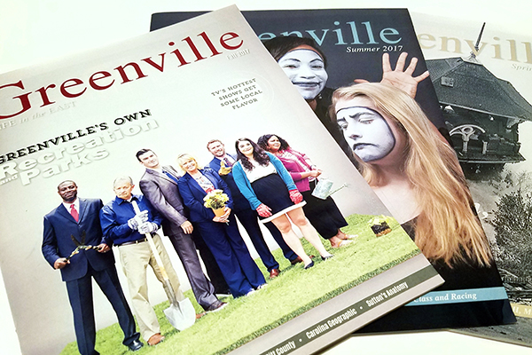

Jason Scott
Graphic Designer
I'm a graphic designer based in the Raleigh, North Carolina, area with experience in art direction, print design, branding, journalism and photography.
I served eight years in the U.S. Army as an electronics technician and a public affairs specialist. I hold degrees in Biological Business Management from N.C. State and Graphic Design from East Carolina University.
Featured Projects
View selected projects below. More information can be found at jmscottdesign.com.
Washington the Magazine
Washington the Magazine is published six times a year with content focusing on Beaufort County, North Carolina.
View project / case studyGreenville: Life in the East
Greenville: Life in the East is a quarterly publication of the Daily Reflector with content focusing on eastern North Carolina.
View project / case studyWork Experience
Graphic Designer
NC Department of Public Instruction
2018 - Present
Work with clients across the Department of Public Instruction to develop concepts and art for various conferences and initiatives; carry multiple simultaneous projects from conception to completion; work with in-house production equipment and outside vendors to print, trim and bind high-quality, finished pieces for distribution across the state
Responsibilities:
- Art Direction
- Branding
- Publication Design
- Event Design
Graphic Designer
Cooke Communications
2017 - 2018
Editorial design and art direction for Greenville Magazine, Her Magazine and various publications; ad design for outside organizations and in-house promotions
Responsibilities
- Art Direction
- Branding
- Publication Design
Art Director/Graphic Designer
Washington Newsmedia
2014 - 2017
Designed and planned concepts and creative direction for newspapers, magazines and special sections; coordinated with creators, sales reps, advertisers, printers and publisher to ensure deadlines were met; copy editing
Responsibilities:
- Art Direction
- Branding
- Publication Design
Education
East Carolina University - Greenville, NC
BFA Graphic Design - 2014
North Carolina State University - 2001
BS Biological Business Management